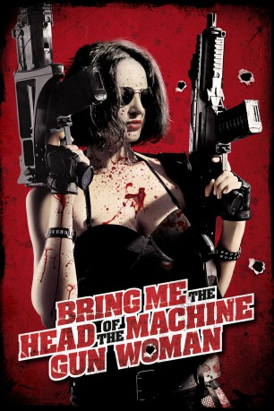

#5357 Bring me the Head of the Machine Gun Woman
 
 IMDB-Wertung: 5.6 / 10
IMDB-Wertung: 5.6 / 10  Metascore: 0
Metascore: 0 
Der skrupellose argentinische Bandenchef Che Longana versucht mit allen ihm zur Verfügung stehenden Mitteln die Frau zu stoppen, die ihn umbringen will - eine blutrünstige sexy Söldnerin , die man unter dem Titel "The Machine Gun Woman" (Fernanda Urrejola) kennt. Er setzt eine unglaublich hohe Summe Bargeld auf ihren Kopf aus und setzt so eine ganze Armee von Auftragskillern in Bewegung. Mitten in diese Action gerät der naive DJ und Zocker Santiago Fernandez (Matías Oviedo), der zufällig ein geheimes Treffen mit Longana und seinem Gefolge belauscht. Ab diesem Zeitpunkt verwandelt sich Santiagos Leben in ein heftiges Videospiel mit Aufgaben, Waffen, sexy Frauen und brutaler Gewalt. Für seinen finalen Auftrag hat er nur 24 Stunden Zeit, bis dahin muss er "Machine Gun Woman" zur Strecke bringen.
Jahr: 2012
Dauer: 73 Minuten
FSK: 18
Land: Chile Studio: Alive Vertrieb und MarketingTonspuren:
Untertitel: Deutsch,
Auflösung: 720p (1280x720) Größe: 1792 MB
Genre: Action, Komödie, Krimi, Liebe
Regisseur: Ernesto Díaz Espinoza
Drehbuch: John Carchietta
Soundtrack:
Darsteller:
- Fernanda Urrejola als La Mujer Metralleta
- Nicolás Ibieta als Israelito
- Matías Oviedo als Santiago Fernández
- Jorge Alís als Che Longana
- Sofía García als Shadeline Soto
- Alex Rivera als Flavio
- Felipe Avello als Jonny Medina / Armeria
- Pato Pimienta als Pato El Conserje
- Francisca Castillo als Santiago's Mom
- Miguel Angel De Luca als Panguinao
- Daniel Antivilo als El Tronador
- Jaime Omeñaca als Bracoli
- Javier Mora als Siberiano
- Andrés Cid als Bosao
- Aldo Botto als Mecánico
- Mauricio Pesutic als Mekano
- Eric Kleinsteuber als El Choro Meneses
- Víctor González als Pistola Loca Loyola
- Guillermo Saavedra als Chinchinero
- Javier Cay Saavedra als Chinchinerito
- Paloma Schneider als Tanguera Colorina
- Salomé Silva als Tanguera Morena
- Benjamín Luna als Ebrio Tanguería
- León Murillo als Pitón
- Dumas als Tanguera Pair
- Majo als Tanguera Pair
- Guillermo Prieto als Ebrio Rubio
- Sofía Oportot als Vaquera Café con piernas
- Sebastian Lira als Cliente café con piernas
- Claudia Arriaga als Cliente café con piernas #2
- Roberta Nicolini als Margarita
- George Vonknorring als Heads Buyer #1
- Rocco als Heads Buyer #1
- Jorge Cordero als Heads Buyer #1
- Nicolas Oyarce als Tangueria Cashier
- Sebastián Ballek als Tanguería Bully #2
Datei: X:\FSK18-2012\Bring me the Head of the Machine Gun Woman (2012, FSK18, 1280x720).mkv seit 17.01.2017
Festplatte: FSK18
 Es gibt insgesamt 26 Filme in der Gruppe 'FSK18-2012'
Es gibt insgesamt 26 Filme in der Gruppe 'FSK18-2012'